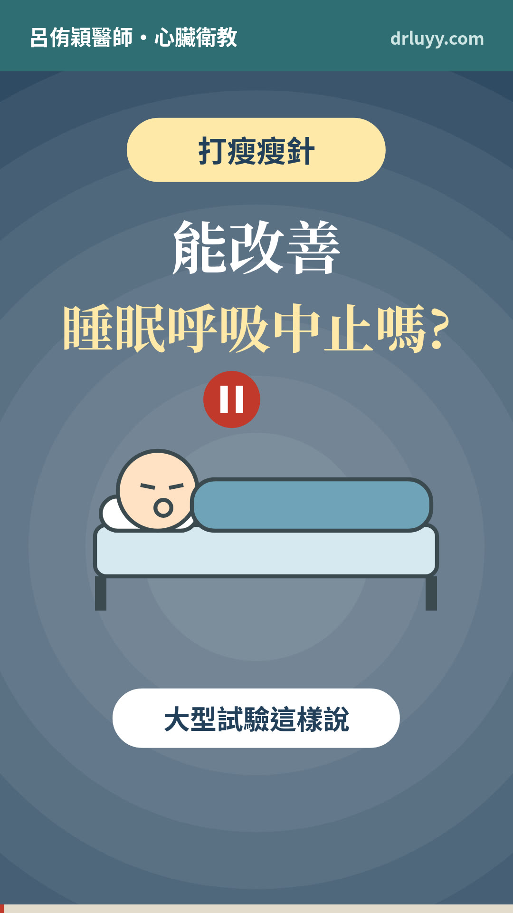
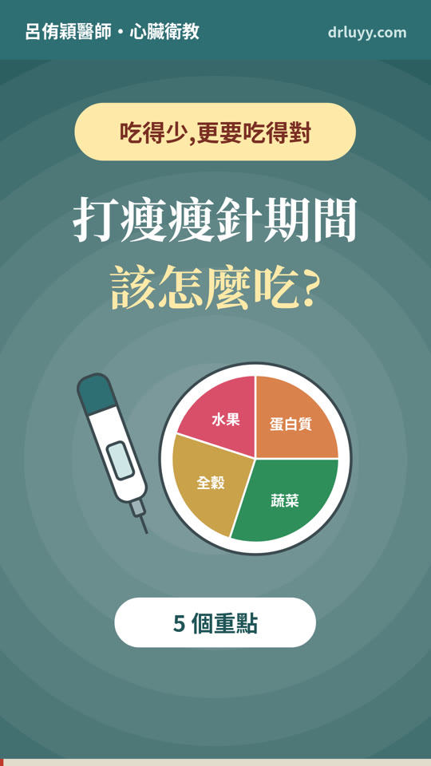

 打瘦瘦針,能改善睡眠呼吸中止嗎? 2026-10-082:06 大型試驗:平均每小時約 50 次的重度患者,打猛健樂一年少 25–29 次(安慰劑約 5 次),四到五成達到緩解或只剩輕度。台灣仿單已列入這個適應症,但目前沒有證據可以取代陽壓呼吸器。 完整文章 → 臉書 Threads YouTube
 打瘦瘦針期間,該怎麼吃? 2026-10-042:05 吃得少,更要吃得對:蛋白質每天至少 60 克、每餐 20–30 克,搭配肌力訓練;用「我的餐盤」檢查均衡;熱量不要太低;留意鈣、維生素 D、鐵、B12 和纖維;水分次喝,糖友吃少注意低血糖。 完整文章 → 臉書 Threads YouTube